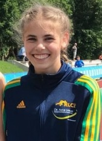

TOPLEISTUNGEN DER RLC-ATHLETEN BEI SUPERWETTER

Noch vor drei Wochen blieb Trainer Ludger Zander nichts anderes übrig, als angesichts des eisigen, nassen Wetters ein wenig zu fluchen, liefen doch seine Athletinnen und Athleten teilweise haarscharf an Qualileistungen vorbei.
Also gab es an diesem Wochenende einen Neustart in Solingen - und jetzt passt alles!
Allen voran Finja Tober, WJU18 und Nils Hartleif, MJU18 stellten ihre excellente Form unter Beweis, dem coronabedingten Trainingsrückstand zum Trotz.